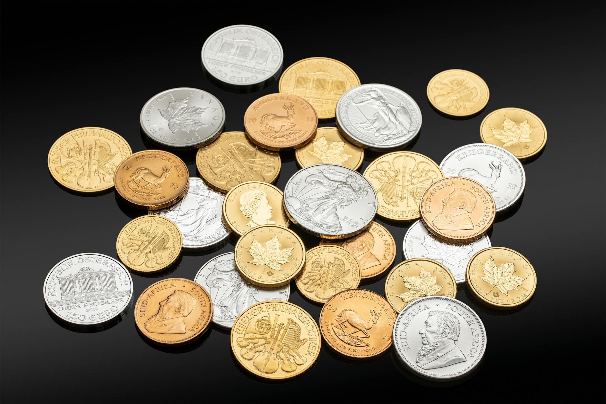

Most first-time silver buyers don't pick an allocation. They buy a few coins when the price dips, buy a few more when a headline spooks them, and end up with a position that has no relationship to their actual financial picture. The standard guidance from financial advisors is 5 to 15% of a portfolio in precious metals, with silver typically representing 20 to 40% of that slice, depending on how much volatility you can accept. That's the range. What follows is how to find your number inside it.
Key Takeaways
- Standard precious metals allocation: 5-15% of total portfolio, with silver at 20-40% of that slice.
- Silver is roughly three times more volatile than gold. Size your position to match.
- When the gold-silver ratio exceeds 80, silver has historically been undervalued relative to gold.
- Build gradually. Starting with 2-3% and adding on dips prevents over-commitment at one price point.

What the Standard Allocation Numbers Actually Mean
In 2023, the World Gold Council's portfolio analysis found that a 5 to 10% allocation to precious metals reduced portfolio volatility by 10 to 15% in mixed-asset portfolios compared to portfolios with no precious metals exposure (World Gold Council, The Relevance of Gold as a Strategic Asset, 2023). Silver responds to many of the same macroeconomic triggers as gold, so the same logic applies, with an added industrial demand component that makes its price more sensitive to economic cycles.
The range 5 to 15% isn't arbitrary. At 5%, precious metals provide a modest hedge without meaningfully impacting returns during equity bull markets. At 15%, you're expressing a view that purchasing power preservation matters more than maximizing nominal growth. Most buyers without a specific thesis land somewhere in the 7 to 10% range.
Where silver fits inside that slice depends on your view of the metal itself. Gold is slower, more stable, and more closely tracked by institutions. Silver is faster, more volatile, and more exposed to industrial demand swings. A buyer who wants protection with limited drama allocates more of their precious metals budget to gold. A buyer comfortable with larger price swings who wants more potential upside tilts silver-heavy.
How to Calculate Your Starting Position
Silver has been roughly three times more volatile than gold over the past 20 years, measured by standard deviation of monthly returns (Silver Institute, World Silver Survey 2024). That's not a reason to avoid it. It is a reason to size the position proportionally smaller than you'd size a gold position, and to build it gradually rather than all at once.
The formula that works for most new buyers:
PM budget × silver share % = silver allocation
Example: $75,000 × 8% = $6,000 PM budget
$6,000 × 30% = $1,800 starting silver position
From our experience working with new precious metals buyers: most people who try to enter at a single price point regret the timing regardless of when they bought. Splitting your target allocation into three to five purchases over six to twelve months removes the anxiety of "did I buy at the top?" and also removes the temptation to over-commit early when enthusiasm is high but knowledge is still developing.

Three Signals That Indicate Silver Is Worth Adding More
In 2024, the gold-silver ratio exceeded 80 multiple times, a level historically associated with silver being undervalued relative to gold (Silver Institute, 2024). The ratio tells you how many ounces of silver it takes to buy one ounce of gold. When that number is high, silver has historically reverted toward its long-run average by outperforming gold in subsequent months. It's not a guarantee, but it's a useful signal when deciding whether to tilt new precious metals purchases toward silver or gold.
Three conditions worth watching:
- Gold-silver ratio above 80. The long-run historical average sits around 60 to 65. When the ratio climbs above 80, you're buying silver at a relative discount to gold based on historical relationship. This doesn't mean buy blindly. It means the ratio is one argument in favor of silver over gold for incremental purchases.
- Industrial demand surge signals. Silver's industrial demand hit a record 654 million ounces in 2023, driven by solar panel manufacturing and electronics (Silver Institute, World Silver Survey 2024). If you're hearing about supply constraints in the solar sector or semiconductor shortages, that's often a leading indicator for silver price pressure upward.
- Inflation trending above 4%. Silver has historically outperformed its own 5-year average return during sustained inflation periods above 4%. It doesn't happen every cycle, but the correlation is stronger than most people expect for an industrial metal.
Common Allocation Mistakes New Silver Buyers Make
The most expensive mistake is treating silver and gold as interchangeable. They're both precious metals, but they behave differently in a portfolio. Gold is primarily a monetary metal. Silver is split roughly 50/50 between monetary and industrial demand. That split means silver prices respond differently to economic news, and a 15% silver position doesn't give you the same protection profile as a 15% gold position.
Three other mistakes that compound quickly:
- Ignoring storage and insurance costs in your return calculation. Physical silver costs money to store and insure properly. A home safe, a bank safe deposit box, and a third-party vault all have different cost structures. If storage costs 0.5 to 1% annually, that's 0.5 to 1% of breakeven before you see a gain. Factor it in before you decide how large a physical position makes sense versus allocated storage or silver ETFs.
- Buying all at one price. Silver moves fast. A position built over six months of regular purchases averages out price volatility in a way that a single large purchase can't. Dollar-cost averaging applies here the same way it applies to equity accumulation.
- Confusing "owning silver" with "investing in silver." Buying a few coins for your desk drawer is fine as a hobby. It's not a portfolio strategy. A real allocation means tracking it, rebalancing it, and knowing when to add versus hold. If you're not willing to do that, a silver ETF or allocated account gives you the exposure without the friction of managing physical coins.
Frequently Asked Questions
Should I hold physical silver, a silver ETF, or allocated storage?
Physical silver gives you direct ownership but adds storage, insurance, and liquidity friction. Silver ETFs (like SLV or PSLV) track the spot price and are easy to buy and sell in a brokerage account, but you don't own the metal directly. Allocated storage (like the Fused Reserve program) lets you own specific serial-numbered bars stored by a vault, combining the benefits of physical ownership with institutional storage. The right choice depends on your position size and how you plan to use the silver in the future.
Is 5% in silver enough to protect against inflation?
A 5% silver position has historically provided some inflation buffer, but the protection is partial at that allocation size. Silver's correlation with CPI is meaningful but not consistent enough to rely on as your only hedge. Most advisors who use silver for inflation protection combine it with other assets like TIPS, real estate, or energy stocks rather than relying on silver alone.
When is the gold-silver ratio too high or too low?
The gold-silver ratio has ranged from roughly 30 at the low (silver expensive relative to gold) to above 120 during the COVID-19 market shock in 2020. The long-run average is around 60 to 65. When it's above 80, silver is historically cheap relative to gold. When it's below 50, gold is the relative value. Neither extreme lasts forever, and the reversion often happens faster than most buyers expect.
How does silver allocation change as I get older?
Older investors approaching or in retirement typically reduce volatility exposure across the board. If you're within 10 years of retirement, the 3 to 5% range is more appropriate than the 12 to 15% range, because silver's price swings can be significant over short periods. Younger buyers with a 20-plus-year horizon can take more exposure and wait out volatility cycles without being forced to sell at a loss.
Sources
- World Gold Council, The Relevance of Gold as a Strategic Asset, 2023, retrieved 2026-06-02, https://www.gold.org/goldhub/research/relevance-of-gold-as-a-strategic-asset
- Silver Institute, World Silver Survey 2024, retrieved 2026-06-02, https://www.silverinstitute.org/world-silver-survey/
- Silver Institute, Silver Price Data, 2024, retrieved 2026-06-02, https://www.silverinstitute.org/silver-price/